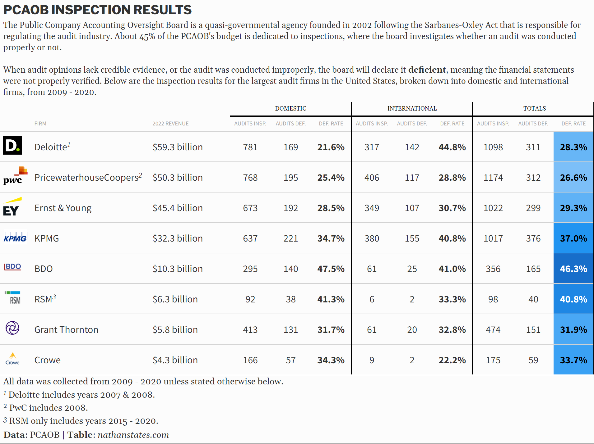
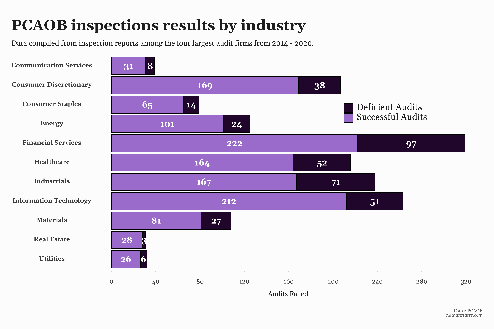

PCAOB Inspections (Part 1)
By Nathan States
November 21, 2022
- Posted on:
- November 21, 2022
- Length:
- 13 minute read, 2582 words
- See Also:

The Public Company Accounting Oversight Board (PCAOB) uses about half of its annual budget on inspection related activities, and reports can be accessed using their database. Inspection reports have changed a bit in terms of the information provided over the past two decades, which means the amount of data to analyze will change depending on the year. However, inspection reports on the whole lack many details that make a thorough analysis very difficult, though we can still get a broad overview of their contents.
In 2003, the year after the PCAOB was created, the board took a preliminary look at 16 audits from the four largest firms in the United States, but they did not report any deficiencies, only potential weaknesses and recommendations. 2004 was the first true year of PCAOB inspections, where deficiences were recorded and categorized into two different types.
Type 1.A deficiencies are defined as:
Deficiencies that were of such significance that we believe the firm, at the time it issued its audit report(s), had not obtained sufficient appropriate audit evidence to support its opinion(s) on the issuer’s financial statements and/or ICFR.
Type 1.B deficiencies are defined as:
Deficiencies that do not relate directly to the sufficiency or appropriateness of evidence the firm obtained to support its opinion(s) but nevertheless relate to instances of non-compliance with PCAOB standards or rules.
Note on Type 1.B Deficiencies #
The PCAOB does not track type 1.B deficiencies in any meaningful way, which makes analyzing them almost impossible. Older reports do not record them at all, and newer reports don’t describe them thoroughly enough. For example, in the 2020 Deloitte report, all type 1.B deficiencies are listed on a single page, and are described indistinctively, such as:
- “In five of 53 audits reviewed, the firm did not include all relevant work papers in the final set of audit documentation […]”
- “In two of 34 audits reviewed, the firm did not make a required communication to the issuer’s audit committee related to the issuer’s critical accounting policies […]”
- “In twelve of 34 audits reviewed, the engagement team performed procedures to determine whether or not matters were critical audit matters but did not include in those procedures one or more matters that were communicated […]”
There’s no indication as to whether any of these cases overlapped, so it isn’t immediately clear how many audits were affected. Was it twelve, nineteen or is it somewhere in the middle? Even if the report did clarify, it’s possible the total number of audits affected could still be higher. At the top of that page, the report states;
“When we review an audit, we do not review every aspect of the audit. As a result, the areas below were not necessarily reviewed on every audit.”
This is also why the report gives two different groups of audits (34 and 53). Once again, though, there’s no indication which 34 audits were chosen to inspect, or why those specifically, so these findings have very little meaning.
The lack of information is not unique to this report. As a result, type 1.B deficiencies will be ignored going forward.
Type 1.A Deficiencies #
Now, we transition to the most serious type of deficiency.
It’s important to note that type 1.A deficiencies are not indicative of fraud, incorrect financial statements, or accounting misconduct. In fact, most deficiencies will not result in any sort of financial restatement. What type 1.A deficiencies do represent is that if there was fraud, or if revenue was reported wrongly, it would of gone undetected due to how poorly the audit was conducted.
Going back to 2004, it should be noted again that early reports are seriously lacking in information. The 2004 report for PricewaterhouseCoopers (PwC) offers some illustrative examples. That year, the PCAOB found 30 audits with type 1.A deficiencies, which is the most in a single year of any firm in PCAOB history. Here’s a description of one of those infractions.
Issuer R
On one audit, the Firm failed to evaluate whether certain contracts to purchase a commodity constituted derivatives.
That’s the entire report of the incident, with no other details provided.
Note the use of the word “Issuer,” which refers to the company in question. The PCAOB does not reveal the name of the corporations whose audits they find to be deficient unless its offered voluntarily. While such information might be useful for investors, or people seeking employment at those companies, most corporations see it as damaging towards their reputation, and will opt to keep their names anonymous instead. This hasn’t changed, so it’s unfortunately not possible to track the outcomes of companies whose audits are found to be improperly conducted.
Not only that, but the PCAOB didn’t begin tracking the total number of audits inspected until 2009. So while PwC failed 30 inspections in 2004, there’s no way of determining their deficiency rate for that year. This is why the upcoming chart does not include years prior to 2009.
At first glance, it may seem surprising that the largest firms in the United States are failing more than one in every four PCAOB inspections on average, at least from 2009 - 2020. It’s important to note that the PCAOB uses risk-based methods of selection when choosing which audits to inspect each year, which skews deficiency rates to some degree. These percentages should therefore not be interpreted as how many audits are deficient on average in the US market.
What these numbers do mean, though, is that the PCAOB can be quite accurate at knowing which audits are going to be deficient or not. From 2014 - 2017, for example, KPMG failed almost half of their audit inspections, the highest four year span among the big four. Smaller firms, such as BDO and RSM, have performed even worse. So while these numbers shouldn’t be interpreted as overall performance, and deficiencies are not indicative of fraud or misconduct, these rates are still significant in terms of how often the PCAOB predicts deficiencies.
After 2015, the PCAOB began introducing random sampling as part of their selection process. From 2016 - 2018, 10 audits were randomly selected for inspection among the largest four firms (with smaller amounts for smaller firms), while 2019 - 2020 increased this to 13. Random sampling would offer a much more accurate percentage of how many audits are deficient on average; however, the PCAOB does not disclose that information. It’s almost certain that randomly selected audits are less deficient than risk-based audits on average, which means percentages for years appearing after 2015 are very likely underestimates relative to those previous.
Other Details #
While company names remain hidden within inspection reports, the PCAOB did begin providing slightly more details in other areas. Reports appearing after 2014 include the industry for each audit inspected, while reports after 2016 also include the revenue range for each issuer. With this, we can begin getting an idea of the kind of audits most likely to be found deficient and where the PCAOB spends most of its time.

Audits from financial services, healthcare, industrials, and materials were disproportionately more likely to be deficient on average. Besides materials, these industries have also received a dispropionate number of inspections, which is the result of the PCAOB’s risk-based selection policy.

The reports don’t distinguish between audits for these categories, so there’s no way of knowing the revenue range for the audits inspected among the “materials” category and vice versa. There are some circumstances where it’s possible to narrow down companies to just a few, though.
Ernst & Young produced deficient audits for exactly one company with revenue over $50 billion from 2018 - 2020. The number of companies with revenue that high is very low; exactly 66 in 2018, according to Fortune. Using the PCAOB Auditor Search tool, which allows users to search the auditors to any publicly traded company, we can narrow the list down to 18 companies, some of which include Amazon, Apple, Walmart, Alphabet, Verizon, Intel, Target, and AT&T. Whether these deficiencies affected one or three companies isn’t clear, but at least on of these companies did not have their financial statements properly verified.
What About Other Domestic Firms? #
So far, we’ve only covered inspection reports from eight of the largest domestic. This covers only a fraction of the total number of inspection reports, though.
While the eight largest firms dominate the overall market, there are still hundreds of small audit firms across the United States. A sizable portion of these are sole proprietorships, limited partnerships, or other small firms that may have PCAOB inspections every three years or so. In fact, as of 2022, only 14 firms receive inspections annually, which used to be even lower.
While these smaller firms receive much less scrutiny each year, their inspections are all contained in separate reports, and there are a ton of them. To try and put this into perspective, the data gathered for the eight firms above came from 128 inspection reports, but as of 11/22/2022, the total number of domestic reports in the database totaled 2,816. Manually gathering data from 128 individual reports is already time consuming, and I’d estimate gathering the data from the remaining 2,688 reports would take upwards of 80+ hours. It would definitely be interesting to compare performance between firms of all sizes, but unfortunately, I don’t have the time to gather that much data. A better analysis would include them.
With that said, it can be observed that smaller firms receive a disproportionate amount of PCAOB inspections relative to the economic impact of the companies they are auditing. To elaborate on this; the four largest firms had at least 2,859 audits inspected from 2004 - 2020, which means that even if we were to assume the remaining 2,688 reports were contained a single audit each, we would find that the PCAOB has inspected roughly the same number of audits for both groups. The reason this could be seen as unequal is because the four largest firms audit almost every company on the S&P 500, while smaller firms are auditing much less consequential companies. In this sense, the PCAOB seems to be equally concerned with the audits of small companies as to that of large, multinational corporations.
Next, we will examine data from international reports.
International Firms #
It might be confusing why an audit regulator based in the United States is conducting inspections on international firms. While all publicly traded companies are required to be audited, they might have assets or revenue streams located in other countries. Before Sarbanes-Oxley, audits would be under the jurisdiction of their country’s local regulations, which means parts of a company’s audit may be conducted inconsistently. As investors, a more consistent standard is preferred.
The Sarbanes-Oxley Act and the PCAOB’s related rules impose obligations — consistently and in the same manner — on all PCAOB-registered firms that elect to perform audit work for public companies. Those obligations do not change based on the location of the firm or the public company being audited.
Over the past decade, the PCAOB has been increasing the number of cooperative arrangements they have with other countries to keep regulations consistent. Because these arrangements are voluntary, countries don’t have to accept them, though this has rarely happened. Notably, though, China has denied access to the board to inspect related audits within their country.
Unlike domestic reports, the four largest firms make up the absolute majority of all international reports (509 out of 847 as of 11/22/22, or roughly 60%), with investigations having occurred in 45 different countries. Canada is the most inspected country for each of the four largest firms, with the next top countries being Brazil, the United Kingdom, Australia, and Mexico. Next on that list is Bermuda, who ranks 6th in audits inspected; the Cayman Islands, a similar tax haven country, also receives frequent inspections.
Many of these inspections involve audits in which the international firm was not the principal auditor, meaning they only acted in a participatory role. Despite this, international affiliates of the big four have struggled even more on international reports than domestic. From 2009 - 2020, about one in every three international audit inspections were deficient on average among the four largest firms.
While all firms recorded higher deficiency rates compared to domestic, Deloitte performed exceptionally worse, posting a deficiency rate almost twice that of its domestic firms. Much of this can be attributed to its Canadian affiliate, which from 2007 - 2015, failed 41 out of 55 inspections. That’s a failure rate of almost 75%. Both Canadian affiliates for KPMG and Ernst & Young have also performed pitifully, both reporting lifetime deficiency rates over 50%. PwC has rate of 29.9%. Brazil has been another weak point, with total deficiency rates over 33% for all four firms. KPMG affiliates in Mexico have failed 11 of 15 inspections thus far; Deloitte affiliates have failed 5 of 6.
On the other hand, Singapore and Bermuda were the two best performing among countries with over 20 audits inspected lifetime, with Bermuda at 16% and Singapore at 3.3%. The Cayman Islands has also not failed one of its 19 inspections so far, so deficiency rates vary wildly from country to country.
Unfortunately, international reports don’t disclose the revenue range or industry sector of each issuer, so these can not be examined. And similar to domestic reports, they do not include the name of the issuer.
Main Takeaways #
- The four largest domestic audit firms failed approximately one in every four audit inspections from 2009 - 2020. Prior to 2016, audit selection was solely based on risk, while newer reports include a selection of randomly selected audits, which skews deficiency rates to some degree.
- Performance among international affiliates of the big four were worse, failing one in every three audits inspections from 2009 - 2020. While all firms performed slightly worse, Deloitte posted a deficiency rate more than twice of its international affiliates.
- Audits in the financial services and industrials sectors were disproportionately more likely to be deficient on average. Companies with revenue ranges between $500m - $2.5 and $5b - $10 billion were slightly more often deficient.
- Overall, a significant lack of information, specifically the lack of disclosure of company names, means its essentially impossible to track the outcomes of deficient audits and the overall high deficiency rate. Therefore, the outcomes of these results is almost impossible to determine.